8.9. Density Functional Theory (DFT)¶
8.9.1. Many Body Schrödinger Equation¶
We use (Hartree) atomic units in this whole section about DFT.
We use the Born-Oppenheimer approximation, which says that the nuclei of the
treated atoms are seen as fixed. A stationary electronic state (for  electrons) is then described by a wave function
fulfilling the many-body Schrödinger equation
electrons) is then described by a wave function
fulfilling the many-body Schrödinger equation
where
is the kinetic term,
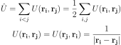
is the electron-electron interaction term and

is the interaction term between electrons and nuclei, where are positions of nuclei and the atomic number of each nucleus (we are using atomic units). So for one atomic calculation with the atom nucleus in the origin, we have just .
gives the probability density of measuring the first
electron at the position , the second at  , dots and the Nth
electron at the position . The normalization is such that
. The is antisymmetric,
i.e. etc.
, dots and the Nth
electron at the position . The normalization is such that
. The is antisymmetric,
i.e. etc.
Integrating  over the first 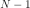 electrons is the probability
density that the -th electron is at the position . Thus the
probability density that any of the N electrons (i.e the first, or
the second, or the third, dots, or the -th) is at the position 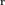 is
called the particle (or number) density and is therefore given by:
over the first 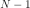 electrons is the probability
density that the -th electron is at the position . Thus the
probability density that any of the N electrons (i.e the first, or
the second, or the third, dots, or the -th) is at the position 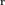 is
called the particle (or number) density and is therefore given by:
![n({\bf r})= \int \Psi^*({\bf r},{\bf r}_2,\cdots,{\bf r}_N) \Psi ({\bf r},{\bf r}_2,\cdots,{\bf r}_N) \,\d^3 r_2\,\d^3 r_3\cdots\d^3 r_N+
+\int \Psi^*({\bf r}_1,{\bf r},\cdots,{\bf r}_N) \Psi ({\bf r}_1,{\bf r},\cdots,{\bf r}_N) \,\d^3 r_1\,\d^3 r_3\cdots\d^3 r_N+\cdots
+\int \Psi^*({\bf r}_1,{\bf r}_2,\cdots,{\bf r}) \Psi ({\bf r}_1,{\bf r}_2,\cdots,{\bf r}) \,\d^3 r_1\,\d^3 r_2\,\d^3 r_3\cdots\d^3 r_{N-1}=
=\int(\delta({\bf r}-{\bf r}_1)+\delta({\bf r}-{\bf r}_2)+\cdots+\delta({\bf r}-{\bf r}_N))
\Psi^*({\bf r}_1,{\bf r}_2,\cdots,{\bf r}_N) \Psi ({\bf r}_1,{\bf r}_2,\cdots,{\bf r}_N) \,\d^3 r_1\,\d^3 r_2\,\d^3 r_3\cdots\d^3 r_{N}=
=\sum_{i=1}^N\int \braket{\Psi|{\bf r}_1,{\bf r}_2,\cdots,{\bf r}_N}\delta({\bf r}-{\bf r}_i) \braket{{\bf r}_1,{\bf r}_2,\cdots,{\bf r}_N|\Psi} \,\d^3 r_1\,\d^3 r_2\,\d^3 r_3\cdots\d^3 r_{N}=
=N\int \braket{\Psi|{\bf r}_1,{\bf r}_2,\cdots,{\bf r}_N}\delta({\bf r}-{\bf r}_1) \braket{{\bf r}_1,{\bf r}_2,\cdots,{\bf r}_N|\Psi} \,\d^3 r_1\,\d^3 r_2\,\d^3 r_3\cdots\d^3 r_{N}=](../_images/math/bf8af6d963e16ac503377c9680b29f6e9e31970b.svg)
(8.9.1.1)¶
Thus gives the number of particles
in the region of integration  . Obviously .
. Obviously .
Note that the number density and potential 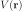 in the Schroedinger equation is related to the electron charge density and electrostatic potential energy by:
where  is the particle elementary charge,
which for electrons is in atomic units.
The amount of electronic charge in the region is given by:
is the particle elementary charge,
which for electrons is in atomic units.
The amount of electronic charge in the region is given by:
The energy of the system is given by
(8.9.1.2)¶
where
![T=\braket{\Psi|\hat T|\Psi}=\sum_i^N\int \Psi^*({\bf r_1},{\bf r_2},\cdots,{\bf r_N})(-\half\nabla_i^2) \Psi({\bf r_1},{\bf r_2},\cdots,{\bf r_N})\,\d^3 r_1\,\d^3 r_2\cdots\d^3 r_N
U=\braket{\Psi|\hat U|\Psi}
V=\braket{\Psi|\hat V|\Psi}=\sum_i^N\int \Psi^*({\bf r_1},{\bf r_2},\cdots,{\bf r_N})v({\bf r_i}) \Psi({\bf r_1},{\bf r_2},\cdots,{\bf r_N})\,\d^3 r_1\,\d^3 r_2\cdots\d^3 r_N=
=\sum_i^N\int \Psi^*({\bf r_1},{\bf r_2},\cdots,{\bf r_N})v({\bf r_1}) \Psi({\bf r_1},{\bf r_2},\cdots,{\bf r_N})\,\d^3 r_1\,\d^3 r_2\cdots\d^3 r_N=
=N\int \Psi^*({\bf r_1},{\bf r_2},\cdots,{\bf r_N})v({\bf r_1}) \Psi({\bf r_1},{\bf r_2},\cdots,{\bf r_N})\,\d^3 r_1\,\d^3 r_2\cdots\d^3 r_N=](../_images/math/925917f130772278a99f20279a70b673dd56c003.svg)
(8.9.1.3)¶
It needs to be stressed, that  generally is not a functional of
generally is not a functional of  alone, only the is. In the next section we show however, that if the
alone, only the is. In the next section we show however, that if the
 is a ground state (of any system), then becomes a functional
of .
is a ground state (of any system), then becomes a functional
of .
8.9.2. The Hohenberg-Kohn Theorem¶
The Schrödinger equation gives the map
where is the ground state. C is bijective (one-to-one correspondence),
because to every  we can compute the corresponding from Schrödinger
equation and two different and
we can compute the corresponding from Schrödinger
equation and two different and  (differing by more than a constant)
give two different , because if and gave the same , then
by substracting
(differing by more than a constant)
give two different , because if and gave the same , then
by substracting
from
we would get , which is a contradiction with the assumption that and differ by more than a constant.
Similarly, from the ground state wavefunction we can compute the charge
density giving rise to the map
which is also bijective, because to every we can compute from
(8.9.1.1) and two different and  give two different
and , because different and give
give two different
and , because different and give
adding these two inequalities together gives
which for gives  , which is nonsense, so .
, which is nonsense, so .
So we have proved that for a given ground state density
(generated by a potential  ) it is possible to calculate the
corresponding ground state wavefunction , in other words, is a unique functional of
) it is possible to calculate the
corresponding ground state wavefunction , in other words, is a unique functional of  :
:
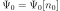
so the ground state energy is also a functional of
We define an energy functional
(8.9.2.1)¶
where is any ground state wavefunction (generated by an
arbitrary potential), that is, is a ground state density belonging to an
arbitrary system. which is generated by the potential  can then be
expressed as
can then be
expressed as
and for we have (from the Ritz principle)
and one has to minimize the functional :
(8.9.2.2)¶
The term
in (8.9.2.1) is universal in the sense that it doesn’t depend on . It can be proven [DFT], that ![F[n]](../_images/math/62f3229ce93043cc41c56574d27265441b0c8abc.svg) is a functional of for
degenerated ground states too, so (8.9.2.2) stays true as well.
is a functional of for
degenerated ground states too, so (8.9.2.2) stays true as well.
The ground state densities in (8.9.2.1) and (8.9.2.2) are called pure-state v-representable because they are the densities of (possible degenerate) ground state of the Hamiltonian with some local potential . One may ask a question if all possible functions are v-representable (this is called the v-representability problem). The question is relevant, because we need to know which functions to take into account in the minimization process (8.9.2.2). Even though not every function is v-representable [DFT], every density defined on a grid (finite of infinite) which is strictly positive, normalized and consistent with the Pauli principle is ensemble v-representable. Ensemble v-representation is just a simple generalization of the above, for details see [DFT].
The functional in (8.9.2.2) depends on the particle number ,
so in order to get , we need to solve the variational formulation
so
(8.9.2.3)¶
Let the be the solution of (8.9.2.3) with a particle number
and the energy :
The Lagrangian multiplier 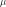 is the exact chemical potential of the system
becuase
so
8.9.3. The Kohn-Sham Equations¶
Consider an auxiliary system of noninteracting electrons (noninteracting
gas):
the Schrödinger equation then becomes:
and the total energy is:
where
So:
The total energy is the sum of eigenvalues (energies of the individual independent particles) as expected. From the last equation it follows:
In other words, the kinetic energy of the noninteracting particles is equal to
the sum of eigenvalues minus the potential energy coming from the total
effective potential  used to construct the single particle orbitals
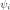.
used to construct the single particle orbitals
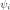.
From (8.9.2.3) we get
(8.9.3.1)¶
Solution to this equation gives the density  .
.
Now we want to express the energy in (8.9.1.2) using and 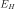 for convenience, where is the classical electrostatic interaction energy of the charge distribution , defined using following relations - we start with a Poisson equation in atomic units
and substitute 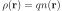, and we use the fact that in atomic units:
or equivalently by expressing  using the Green function:
using the Green function:
(8.9.3.2)¶
and finally is related to using:
so we get:
Using the rules for functional differentiation, we can check that:
Using the above relations, we can see that
So from (8.9.2.1) we get
(8.9.3.3)¶
The rest of the energy is denoted by and it is called is the exchange and correlation energy functional. From (8.9.2.3)
From (8.9.3.2) we have
from (8.9.1.3) we get
we define
(8.9.3.4)¶
so we arrive at
(8.9.3.5)¶
Solution to this equation gives the density . Comparing (8.9.3.5) to
(8.9.3.1) we see that if we choose
(8.9.3.6)¶
then . So we solve the Kohn-Sham equations of this auxiliary non-interacting system
(8.9.3.7)¶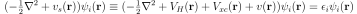
which yield the orbitals that reproduce the density of the original interacting system
(8.9.3.8)¶
The sum is taken over the lowest energies. Some of the can be
degenerated, but it doesn’t matter - the index  counts every eigenfunction
including all the degenerated. In plain words, the trick is in realizing, that
the ground state energy can be found by minimizing the energy functional
(8.9.2.1) and in rewriting this functional into the form (8.9.3.3),
which shows that the interacting system can be treated as a noninteracting one
with a special potential.
counts every eigenfunction
including all the degenerated. In plain words, the trick is in realizing, that
the ground state energy can be found by minimizing the energy functional
(8.9.2.1) and in rewriting this functional into the form (8.9.3.3),
which shows that the interacting system can be treated as a noninteracting one
with a special potential.
8.9.4. The XC Term¶
The exchange and correlation functional
![E_{xc}[n]=(T+U)[n]-E_H[n]-T_S[n]](../_images/math/a2c36efd04bd4513b20771c47a3410631e78dabf.svg)
can always be written in the form
where the  is called the XC energy density.
The XC potential is defined as:
is called the XC energy density.
The XC potential is defined as:
8.9.5. Total Energy¶
We already derived all the necessary things above, so we just summarize it here. The total energy is given by:
where
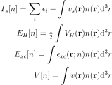
This is the correct, quadratically convergent expression for the total energy.
We use the whole input potential 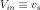 and its associated
eigenvalues  to calculate the kinetic energy , this follows
from the derivation of the expression for . Then we use the calculated
charge density to express , and .
to calculate the kinetic energy , this follows
from the derivation of the expression for . Then we use the calculated
charge density to express , and .
If one is not careful about the potential associated with the eigenvalues,
i.e., confusing  with
with  , one gets a slowly converging formula
for the total energy. By expanding using (8.9.3.6):
, one gets a slowly converging formula
for the total energy. By expanding using (8.9.3.6):
So is equal to:
And then the slowly converging form of total energy is:
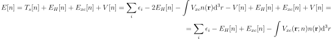
The reason it is slowly converging is because the new formula for kinetic
energy is mixing with , so it is not as precise (see above)
and converges much slower with SCF iterations. Once self-consistency has been
achieved (i.e. ), the two expressions for total energy are
equivalent.
8.9.6. XC Approximations¶
All the expressions above are exact (no approximation has been made so far).
Unfortunately, no one knows exactly (yet). As such,
various approximations for it exist.
LDA¶
The most
simple approximation is the local density approximation (LDA), for which the
xc energy density at is taken as that of a homogeneous
electron gas (the nuclei are replaced by a uniform positively charged
background, density  ) with the same local density:
) with the same local density:
The xc potential defined by (8.9.3.4) is then
![V_{xc}({\bf r};n)={\delta E_{xc}[n]\over\delta n({\bf r})}= \epsilon_{xc}({\bf r};n)+ \int n({\bf r}'){\delta \epsilon_{xc}({\bf r}';n)\over\delta n({\bf r})}\d^3r'](../_images/math/4c1697e25da2925d00c1f82360041d9799141f3b.svg)
which in the LDA becomes
(8.9.6.1)¶
The xc energy density of the homogeneous gas can be computed exactly:
where the  is the electron gas exchange term given
by
is the electron gas exchange term given
by
the rest of is hidden in for which
there doesn’t exist an analytic formula, but the correlation energies are known
exactly from quantum Monte Carlo (QMC) calculations by Ceperley and
Alder [pickett]. The energies were fitted by Vosko, Wilkes and Nussair
(VWN) with and they got accurate results with errors less
than 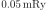 in  , which means that
is virtually known exactly. VWN result:
, which means that
is virtually known exactly. VWN result:
where , ,  , ,
,
, ,
,  (note that the value of
(note that the value of  is wrong in
[pickett]),
is wrong in
[pickett]),  and
and  is the electron gas
parameter, which gives the mean distance between electrons (in atomic units):
is the electron gas
parameter, which gives the mean distance between electrons (in atomic units):
The xc potential is then computed from (8.9.6.1):
Some people also use Perdew and Zunger formulas, but they give essentially the same results. The LDA, although very simple, is surprisingly successful. More sophisticated approximations exist, for example the generalized gradient approximation (GGA), which sometimes gives better results than the LDA, but is not perfect either. Other options include orbital-dependent (implicit) density functionals or a linear response type functionals, but this topic is still evolving. The conclusion is, that the LDA is a good approximation to start with, and only when we are not satisfied, we will have to try some more accurate and modern approximation.
RLDA¶
Relativistic corrections to the energy-density functional (RLDA) were proposed by MacDonald and Vosko:
where
We now calculate  :
:
(8.9.6.2)¶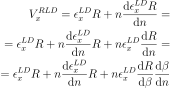
where the derivative can be evaluated as follows:
And in exactly the same manner:
So we can write

where
where we used the derivative of  , which after a tedious, but
straightforward differentiation is:
, which after a tedious, but
straightforward differentiation is:
Plugging this back in, we get:
![V_x^{RLD} = V_x^{LD}\left(R+{1\over4}\beta{\d R\over\d\beta}\right)
=
=
V_x^{LD}\left(1-{3\over 2}A^2 +{1\over4}\beta(-6A)
\left({1\over\mu} - {A\over\beta}\right)
\right)
=
=
V_x^{LD}\left(1-{3\over 2}A^2 + {6\over4} A^2-{6\over4}\beta {A\over\mu}
\right)
=
=
V_x^{LD}\left(1-{3\over2}{\beta\over\mu} A
\right)
=
=
V_x^{LD}\left(1-{3\over2}{\beta\over\mu} \left(
\beta\mu - \log(\beta+\mu) \over \beta^2\right)
\right)
=
=
V_x^{LD}\left(1-{3\over2} \left(
\beta\mu - \log(\beta+\mu) \over \beta\mu\right)
\right)
=
= V_x^{LD}\left({3\log(\beta+\mu) \over 2\beta\mu}-\half\right)](../_images/math/aaa190dacb14a5d9ccd94e4f648c23cbe5fb6e7d.svg)
For  we get
we get  , and as expected, because
, and as expected, because
Code:
>>> from sympy import limit, var, sqrt, log
>>> var("beta")
beta
>>> limit((beta*sqrt(1+beta**2) - log(beta+sqrt(1+beta**2)))/beta**2, beta, 0)
0
8.9.7. Radial DFT Problem¶
Kohn-Sham Equations¶
For spherically symmetric potentials, we write all eigenfunctions as:
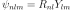
and we need to solve the following Kohn-Sham equations:
With normalization:
For Schroedinger equation, the charge density is calculated by adding all “(n, l, m)” states together, counting each one twice (for spin up and spin down):
where we have introduced the occupation numbers 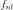 by
Normalization of the charge density is:
So we can see, that it must hold:
where  is the atomic number (number of electrons), and as such, are
indeed the occupation numbers (integers). The factor
is the atomic number (number of electrons), and as such, are
indeed the occupation numbers (integers). The factor  is
explicitly factored out, as it cancels with the spherical harmonics:
assuming all 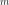 states are occupied, this can be simplified to:
is
explicitly factored out, as it cancels with the spherical harmonics:
assuming all 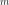 states are occupied, this can be simplified to:
We can also use this machinery to prescribe “chemical occupation numbers”, that
don’t necessarily correspond to the DFT ground state. For example for  atom
we get:
atom
we get:
By summing all these , we get 92 as expected:

But this isn’t the DFT ground state, because some KS energies are skipped, for
example there is only one state for  ,
,  , but there are nine more
states with the same energy — instead two more states are occupied in
, but there are nine more
states with the same energy — instead two more states are occupied in  ,
,
 , but those have higher energy. So this corresponds to excited DFT state,
strictly speaking not physically valid in the DFT formalism, but in practice
this approach is often used. One can also prescribe fractional occupation
numbers (in the Dirac case).
, but those have higher energy. So this corresponds to excited DFT state,
strictly speaking not physically valid in the DFT formalism, but in practice
this approach is often used. One can also prescribe fractional occupation
numbers (in the Dirac case).
Poisson Equation¶
Poisson equation becomes:
Total Energy¶
The total energy is given by:
where
doing the integrals a bit we get:
We can also express everything using the charge density :
8.9.8. DFT As a Nonlinear Problem¶
The task is to find such a charge density , so that all the equations below
hold (e.g. are self-consistent):
This is a standard nonlinear problem, except that the Jacobian is dense, as shown below.
Reformulation¶
Let’s write everything in terms of explicitly:
Now we can write everything as just one (nonlinear) equation:
FE Discretization¶
The correspondig discrete problem has the form
where
Here is the vector
of unknown coefficients for the -th wavefunction . Our equation
can then be written in the compact form
where with
Jacobian¶
The Jacobi matrix has the elements:
The only possible dense term is:
![{\partial\over\partial y_k^{(s)}}\int_\Omega \int_\Omega {
\sum_{m=1}^4 \phi_m^2(x')
\over|x' - x|}\d x'\,\phi_n(x) v_i(x) \d x =
=
{\partial\over\partial y_k^{(s)}}\int_\Omega \int_\Omega {
\sum_{m=1}^4 \left(\sum_{j=1}^N y_j^{(m)} v_j(x')\right)^2
\over|x' - x|}\d x'\, \left(\sum_{j=1}^N y_j^{(n)} v_j(x)\right) v_i(x) \d x =
=
\int_\Omega \int_\Omega {
2 \left(\sum_{j=1}^N y_j^{(s)} v_j(x')\right)v_k(x')
\over|x' - x|}\d x'\, \left(\sum_{j=1}^N y_j^{(n)} v_j(x)\right) v_i(x) \d x +
+
\int_\Omega \int_\Omega {
\sum_{m=1}^4 \left(\sum_{j=1}^N y_j^{(m)} v_j(x')\right)^2
\over|x' - x|}\d x'\, \delta_{ns}v_k(x) v_i(x) \d x](../_images/math/461d86ad196a2c7945a8ab56c884b804af69996c.svg)
Now we can see that we have in there the following term:
which is dense in  , as can be easily seen be fixing and writing
, as can be easily seen be fixing and writing
so for each  there is some contribution from the integral
there is some contribution from the integral  for such
for such  where is nonzero, thus
making the Jacobian dense.
where is nonzero, thus
making the Jacobian dense.
8.9.9. Thomas-Fermi-Dirac Theory¶
There are two ways to derive equations for Thomas-Fermi-Dirac theory. One way is to start from grand potential and derive all equations from it. The other way is to start with low level equations and build our way up. Will start with the former.
Top Down Approach¶
We start with a grand potential for fermions:
![\Omega[\beta, \mu]
= -\sum_i {1\over\beta}
\log\left(\sum_{N=0}^1 e^{-\beta\left(N\epsilon_i - N\mu\right)}\right)
=
= -\sum_i {1\over\beta}
\log\left(1 + e^{-\beta\left(\epsilon_i - \mu\right)}\right)
=
= -{1\over\beta}
\int \int {2\d^3 x \d^3 p \over (2\pi)^3} \log\left(1 +
e^{-\beta\left({p^2\over 2} + V({\bf x}) - \mu\right)}\right)
-E_{ee} - {1\over3}E_{xc} =
= -{2\over\beta}
\int \d^3 x \int_0^\infty{ 4\pi p^2 \d p \over (2\pi)^3} \log\left(1 +
e^{-\beta\left({p^2\over 2} + V({\bf x}) - \mu\right)}\right)
-E_{ee} - {1\over3}E_{xc} =
= -{1\over \pi^2 \beta}
\int \d^3 x \int_0^\infty p^2 \log\left(1 +
e^{-\beta\left({p^2\over 2} + V({\bf x}) - \mu\right)}\right) \d p
-E_{ee} - {1\over3}E_{xc} =
= -{2\sqrt2 \over 3 \pi^2 \beta^{5\over2}}
\int \d^3 x \int_0^\infty {u^{3\over2} \over
1 + e^{u-\beta\left(\mu-V({\bf x})\right)}} \d u
-E_{ee} - {1\over3}E_{xc} =
= -{2\sqrt2 \over 3 \pi^2 \beta^{5\over2}}
\int I_{3\over2}\left(\beta\left(\mu-V({\bf x})\right)\right) \,\d^3 x
-E_{ee} - {1\over3}E_{xc} =
= -{2\sqrt2 \over 3 \pi^2 \beta^{5\over2}}
\int I_{3\over2}\left(\beta\left(\mu-V({\bf x})\right)\right) \,\d^3 x
-E_{ee} - {1\over3}E_{xc}](../_images/math/8470aa896884355832a511b48923c81e4509cb10.svg)
The potential
is the total potential that the electrons experience (it contains nuclear,
Hartree, and XC terms) and  is the Hartree energy:
is the Hartree energy:
For simplicity, we assume here that only contains the exchange of the homogeneous electron gas. For a general XC functional, the relation is nonlinear and one must simply numerically calculate the XC energy density and calculate the XC energy using:

In our case here, we have , which is only true for the exchange in homogeneous electron gas. Otherwise the relation is nonlinear. In the general case, the correction that must be applied is:

The density is a functional derivative with respect to :
By defining the function :
we can express the grand potential using  as follows:
as follows:
Now we can calculate the free energy:
![F_e[\beta, n_e] = \Omega[\beta, n_e] + \mu N
= \Omega[\beta, n_e] + \mu \int n_e({\bf x}) \,\d^3 x =
= \int \left(-{2\sqrt2 \over 3 \pi^2 \beta^{5\over2}}
I_{3\over2}(\Phi(n_e({\bf x})))
+ \mu n_e({\bf x})
- n_e(\mathbf{x}) \left(
\half V_{ee}(\mathbf{x})
+{1\over 4} V_{xc}(\mathbf{x})
\right)
\right)\d^3 x =
= \int \left(-{2\sqrt2 \over 3 \pi^2 \beta^{5\over2}}
I_{3\over2}(\Phi(n_e({\bf x})))
+ {1\over \beta} n_e({\bf x}) \Phi(n_e({\bf x}))
+ n_e({\bf x}) V({\bf x})
- n_e(\mathbf{x}) \left(
\half V_{ee}(\mathbf{x})
+{1\over 4} V_{xc}(\mathbf{x})
\right)
\right)\d^3 x =
= \int \left(-{2\sqrt2 \over 3 \pi^2 \beta^{5\over2}}
I_{3\over2}(\Phi(n_e({\bf x})))
+ {1\over \beta} n_e({\bf x}) \Phi(n_e({\bf x}))
+ n_e({\bf x})\left( V_{en}({\bf x})
+\half V_{ee}(\mathbf{x})
+ {3\over 4} V_{xc}(\mathbf{x}) \right)
\right)\d^3 x\,,](../_images/math/8bd4541cd3f6a12e09f1961cb821f42a369c5f49.svg)
where we used the fact that , i.e. the left hand side is a constant, thus the sum of the terms on the right hand side is also constant (even though the individual terms are not).
We can calculate the entropy 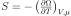 as follows:
![TS
=-T \left(\partial\Omega\over\partial T\right)_{V,\mu} =
=\beta \left(\partial\Omega\over\partial \beta\right)_{V,\mu} =
=\beta {\partial\over\partial \beta}\left(
-{2\sqrt2 \over 3 \pi^2 \beta^{5\over2}}
\int I_{3\over2}(\Phi(n_e({\bf x}))) \, \d^3 x
- E_{ee} - {1\over3}E_{xc}
\right) =
=\beta {\partial\over\partial \beta}\left(
-{2\sqrt2 \over 3 \pi^2 \beta^{5\over2}}
\int I_{3\over2}(\Phi(n_e({\bf x}))) \, \d^3 x
\right) =
=\beta \left(
{5\over2}{2\sqrt2 \over 3 \pi^2 \beta^{7\over2}}
\int I_{3\over2}(\Phi(n_e({\bf x}))) \, \d^3 x
-{2\sqrt2 \over 3 \pi^2 \beta^{5\over2}}
\int {3\over2} I_{1\over2}(\Phi(n_e({\bf x})))
{\partial\Phi(n_e({\bf x}))\over\partial\beta}
\, \d^3 x
\right) =
=\beta \left(
{5\over2}{2\sqrt2 \over 3 \pi^2 \beta^{7\over2}}
\int I_{3\over2}(\Phi(n_e({\bf x}))) \, \d^3 x
-{2\sqrt2 \over 3 \pi^2 \beta^{5\over2}}
\int {3\over2} I_{1\over2}(\Phi(n_e({\bf x})))
(\mu-V({\bf x}))
\, \d^3 x
\right) =
= {5\over2}{2\sqrt2 \over 3 \pi^2 \beta^{5\over2}}
\int I_{3\over2}(\Phi(n_e({\bf x}))) \, \d^3 x
- \int n_e({\bf x}) (\mu-V({\bf x})) \, \d^3 x =
= {5\over3}{\sqrt2 \over \pi^2 \beta^{5\over2}}
\int I_{3\over2}(\Phi(n_e({\bf x}))) \, \d^3 x
-\mu N + E_{en}+2E_{ee} + {4\over 3}E_{xc}](../_images/math/e297caa805bdc7190c64100fecaf1350ebfbf1f3.svg)
The total energy is then equal to:
From which we can see that the kinetic energy  is equal to:
is equal to:
The relation between the total energy and free energy can be also written as:
But it gives the same result as we obtained above.
To determine the kinetic part of the free energy, we set all potentials equal to zero () and obtain:
If the potentials are zero, then the pressure can be calculated from:
If the potentials are not zero, then one can calculate the pressure using:
![P = - \left(\partial\Omega\over\partial V\right)_{\mu,T}
= - \left(\partial F\over\partial V\right)_{T,N} =
= - {\partial \over\partial V} \int f \d^3 x =
= - \left[f+e_{ee}\right]_b
- \int {\partial f\over\partial n_e}
{\partial n_e\over\partial V}
\d^3 x =
= - \left[f+e_{ee}\right]_b
- \mu \int {\partial n_e\over\partial V} \d^3 x =
= - \left[f+e_{ee}\right]_b
+ \mu [n_e]_b =
= \left[(-f)-e_{ee}+\mu n_e \right]_b =
= \left[\left({2\over3}e_{kin} + e_{ee} + {1\over3}e_{xc}-\mu n_e\right)
-e_{ee}+\mu n_e \right]_b =
= \left[{2\over3}e_{kin} + {1\over3}e_{xc}\right]_b =
= {1\over 3V} \int_b \left( {2\over3}e_{kin} + {1\over3}e_{xc}
\right) {\bf x}\cdot{\bf n}\,\d S =
= {1\over 3V} \int \left( {2\over3}e_{kin} + {1\over3}e_{xc}
\right) \nabla\cdot{\bf x}\,\d^3 x
+
{1\over 3V} \int {\bf x}\cdot\nabla \left(
{2\over3}e_{kin} + {1\over3}e_{xc}
\right) \,\d^3 x =
= {1\over 3V} (2E_{kin} + E_{xc})
+
{1\over 3V} \int {\bf x}\cdot \left(
-n_e({\bf x})\nabla V({\bf x})
+ \nabla{1\over3}e_{xc}
\right) \,\d^3 x =
= {1\over 3V} (2E_{kin} + E_{xc})
+
{1\over 3V} (E_{en}+E_{ee}) =
= {1\over 3V}(2E_{kin} + E_{en} + E_{ee} + E_{xc})](../_images/math/40e3227cd0d4f25d2c0de1acbdc6aa419e6f9bd4.svg)
Summary:
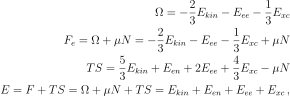
where:
![E_{kin} = {\sqrt2 \over \pi^2 \beta^{5\over2}}
\int I_{3\over2}(\Phi(n_e({\bf x}))) \, \d^3 x
E_{en} = \int n_e({\bf x}) V_{en}({\bf x})\, \d^3 x
E_{ee} = \half \int n_e({\bf x}) V_{ee}({\bf x})\, \d^3 x
E_{xc} = {3\over4}\int n_e({\bf x}) V_{xc}({\bf x})\, \d^3 x
n_e({\bf x}) = {\sqrt2 \over \pi^2 \beta^{3\over2}}
I_{1\over2}\left( \beta\left(\mu-V({\bf x})\right) \right)
\Phi(n_e({\bf x})) = \beta\left(\mu-V({\bf x})\right)
= I_{1\over2}^{-1}\left(
{\pi^2 \beta^{3\over2} \over \sqrt 2} n_e({\bf x})
\right)
N = \int n_e({\bf x})\, \d^3 x
\mu = {1\over \beta} \Phi(n_e({\bf x})) + V({\bf x})](../_images/math/22d7aa664c4fee4e9009d0724e09dffa9cda57ad.svg)
and is calculated as follows:
So  can also be expressed as:
can also be expressed as:
Bottom Up Approach¶
The other way to derive these equations is to use the following considerations.
The number of states in a box of side  is given by:
is given by:
We use atomic units, so  .
The electronic particle density is:
.
The electronic particle density is:
(8.9.9.1)¶
where we used the relation for Fermi energy . The potential is the total potential that the electrons
experience (it contains Hartree, nuclear and XC terms).
At finite temperature  we need to use the Fermi distribution and this
generalizes to:
we need to use the Fermi distribution and this
generalizes to:
Now we use the relation and substitutions 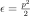, to rewrite this using the Fermi-Dirac Integral:

At low temperature ( ) we have
) we have
 ,
,  and we obtain:
and we obtain:
Identical with (8.9.9.1). We can see that the chemical potential
becomes the Fermi energy in the limit . In the finite-temperature
case, is determined from the normalization condition for the number of
electrons :
The kinetic energy is
![E_{kin} = \int \d^3 x \int 2 {\d^3p\over (2\pi)^3} {p^2\over 2}
{1\over e^{\beta(E-\mu)}+1}
=
= \int \d^3 x \int_0^\infty 2 {4\pi p^2 \d p\over (2\pi)^3} {p^2\over 2}
{1\over e^{\beta(E-\mu)}+1} =
= \int \d^3 x \int_0^\infty 2 {4\pi \sqrt 2\sqrt \epsilon \d \epsilon \over
(2\pi)^3} \epsilon {1\over e^{\beta(\epsilon + V({\bf x})-\mu)}+1} =
= {\sqrt 2 \over \pi^2} \int \d^3 x \int_0^\infty
{\epsilon^{3\over2} \d \epsilon \over
e^{\beta(\epsilon + V({\bf x})-\mu)}+1} =
= {\sqrt 2 \over \pi^2 \beta^{5\over2}} \int \d^3 x \int_0^\infty
{y^{3\over2} \d y \over e^{y - \beta(\mu -V({\bf x}))}+1} =
= {\sqrt 2 \over \pi^2 \beta^{5\over2}}
\int I_{3\over2}\left(\beta(\mu - V({\bf x}))\right) \d^3 x](../_images/math/d8804dc3e59a7b21d74f2380dace2cbdb45bf49a.svg)
From the last formula it can be shown that the kinetic energy is equal to
The potential energy is equal to:
The internal energy is equal to:
The entropy  is equal to:
is equal to:
![TS
= -{1\over\beta}
\sum_i [n_i\log n_i + (1-n_i)\log(1-n_i)] =
= -{1\over\beta}
\sum_i \left[n_i\log\left(n_i\over 1-n_i\right)
+ \log(1-n_i)\right] =
= \left[\sum_i n_i\epsilon_i\right]
+
\left[-\sum_i n_i \mu\right]
+
\left[-{1\over\beta} \sum_i\log(1-n_i)\right] =
= \left[E_{kin} + E_{en} + 2 E_{ee}\right]
+
\left[-\mu N\right]
+
\left[{2\over3}E_{kin}\right]
=
= {5\over3}E_{kin} + E_{en} + 2 E_{ee} -\mu N =
= {5\over2}P V + {1\over6}E_{en} + {7\over6}E_{ee} -\mu N](../_images/math/c08ddbd70583f03f3da4c143f2711f057fc315d8.svg)
where is the number of states at
energy . We used the following calculation expressing one of the
sums in terms of the kinetic energy:
![-{1\over\beta} \sum_i\log(1-n_i) =
= -{1\over\beta}\int {2\d^3 x \d^3 p\over (2\pi)^3}
\log {e^{\beta(E-\mu)}\over 1+e^{\beta(E-\mu)}} =
= -{\sqrt 2\over \pi^2 \beta^{5\over2}}\int \d^3 x \int_0^\infty
\sqrt{y}\, \d y
\log {e^{y-\beta(\mu-V({\bf x}))}\over
1+e^{y-\beta(\mu-V({\bf x}))}} =
= -{\sqrt 2\over \pi^2 \beta^{5\over2}}\int \d^3 x \left[
-{2\over3}\int_0^\infty {y^{3\over2} \d y \over
1+e^{y-\beta(\mu-V({\bf x}))}} \right] =
= {2\over 3}{\sqrt 2\over \pi^2 \beta^{5\over2}}\int
I_{3\over2}\left(\beta(\mu-V({\bf x}))\right) \d^3 x =
= {2\over 3} E_{kin} \,,](../_images/math/b3e7d7fea83194b24206abb6bf934a633ffef20a.svg)
where we used  .
.
The free energy is equal to:

The grand potential is equal to:
We can now express the free energy functional as a function of the density:
![F_e[\beta, n_e] = -{2\over3}E_{kin} - E_{ee} + \mu N =
= \int \left(-{2\sqrt2 \over 3 \pi^2 \beta^{5\over2}}
I_{3\over2}(\Phi(n_e({\bf x})))
-\half n_e({\bf x}) V_{ee}({\bf x})
+ \mu n_e({\bf x}) \right)\d^3 x =
= \int \left(-{2\sqrt2 \over 3 \pi^2 \beta^{5\over2}}
I_{3\over2}(\Phi(n_e({\bf x})))
-\half n_e({\bf x}) V_{ee}({\bf x})
+ {1\over \beta} n_e({\bf x}) \Phi(n_e({\bf x}))
+ n_e({\bf x}) V({\bf x}) \right)\d^3 x =
= \int \left(-{2\sqrt2 \over 3 \pi^2 \beta^{5\over2}}
I_{3\over2}(\Phi(n_e({\bf x})))
-\half n_e({\bf x}) V_{ee}({\bf x})
+ {1\over \beta} n_e({\bf x}) \Phi(n_e({\bf x}))
+ n_e({\bf x}) (V_{en}({\bf x}) + V_{ee}({\bf x})
+ V_{xc}({\bf x}))
\right)\d^3 x =
= \int \left(-{2\sqrt2 \over 3 \pi^2 \beta^{5\over2}}
I_{3\over2}(\Phi(n_e({\bf x})))
+ {1\over \beta} n_e({\bf x}) \Phi(n_e({\bf x}))
+ n_e({\bf x}) (V_{en}({\bf x}) +\half V_{ee}({\bf x})
+ V_{xc}({\bf x}))
\right)\d^3 x =
= \left( -{2\over3}E_{kin}
+ \int {1\over \beta} n_e({\bf x}) \Phi(n_e({\bf x}))\, \d^3 x
\right)
+ E_{en} + E_{ee} + E_{xc}](../_images/math/4fb087eedc9b89b6480d3157da6b9bfc13f30604.svg)
8.9.10. Orbital Free Density Functional Theory¶
The orbital-free electronic free energy is given by:
![F_e[n_e] = T_0[n_e] + U_{en}[n_e] + U_{ee}[n_e] + F_{xc}[n_e]\,,](../_images/math/96f8e741e9a1a721af2f3541a36548e102ca72a2.svg)
where the kinetic energy can be written in a few different equivalent ways as
![T_0[n_e] =
= {\sqrt 2\over\pi^2 \beta^{5\over2}}
\int \left(
I_{1\over2}\left(\beta(\mu - V({\bf x}))\right)
\beta(\mu-V({\bf x})) -
{2\over 3} I_{3\over2}(\beta(\mu-V({\bf x})))
\right) \d^3 x =
= {1\over\beta} \int \left(
n_e(\mathbf{x}) \beta(\mu-V({\bf x})) -
{2\sqrt2\over 3\pi^2 \beta^{3\over2}} I_{3\over2}(\beta(\mu-V({\bf x})))
\right) \d^3 x =
= {1\over\beta} \int \left(
n_e(\mathbf{x}) \Phi(n_e(\mathbf{x})) -
{2\sqrt2\over 3\pi^2 \beta^{3\over2}} I_{3\over2}(\Phi(n_e(\mathbf{x})))
\right) \d^3 x =
= {1\over\beta} \int \left(
n_e(\mathbf{x}) I_{1\over2}^{-1}(y) -
{2n_e(\mathbf{x})\over 3 y} I_{3\over2}(I_{1\over2}^{-1}(y))
\right) \d^3 x =
= {1\over\beta} \int
n_e(\mathbf{x}) \left( I_{1\over2}^{-1}(y) -
{2\over 3 y} I_{3\over2}(I_{1\over2}^{-1}(y))\right)
\d^3 x =
={1\over\beta} \int n_e(\mathbf{x}) f(y) \d^3 x\,;\quad\quad
y={\pi^2\over\sqrt2}\beta^{3\over2} n_e\,,](../_images/math/e777d1fd6ab6b0ca922f2ac64affc83d76e15f25.svg)
where  is a special function of one variable, composed of a
Fermi-Dirac Integral of order
is a special function of one variable, composed of a
Fermi-Dirac Integral of order  and its inverse of order :
and its inverse of order :

the electron-nuclei term has the form
The electron-electron (Hartree) term takes the form:
and the exchange and correlation functional is given by the Perdew-Zunger LDA:
is the (positive) electron density, is the (positive) nuclei density.
We minimize this free energy under the condition of particle conservation. The constrained functional is (we use from now on):
The variational solution is:
![{\delta \Omega[n] \over \delta n} = 0](../_images/math/2500c728b6988fa5b3114c148bd3f616370a939e.svg)
Or:
(8.9.10.1)¶
Finally we get:
(8.9.10.2)¶
The individual terms are:
and
and
and
All together the Hamiltonian is:
We can also introduce an artificial orbital as follows:
and minimize with respect to  :
:
![{\delta \Omega[n] \over \delta \psi} = 0 \,.](../_images/math/b4106ae151a3ec56fa6a0e012cd01de0c1084b0a.svg)
We will use tilde to denote functions in terms of . So .
Using the relation
we obtain:
![{\delta \Omega[n] \over \delta \psi}
= 2 \psi {\delta \Omega[n] \over \delta n} = 0 \,.](../_images/math/33e93014504bc1f67496ebc9884fee8448641b83.svg)
So the equation (8.9.10.1) gets multiplied by  :
:
as well as the equation (8.9.10.2):
So the Hamiltonian ![H[n]](../_images/math/feea33f063ba04b9fa2388c4b347d3dac2af9c7d.svg) expressed using and the Hamiltonian
expressed using are related by
.
expressed using and the Hamiltonian
expressed using are related by
.
Free Energy Minimization¶
For clarity, we will be using from equation (8.9.10.2) as our main
quantity, but we will also write the final relations using for
completeness.
We start with some initial guess for  (it must be normalized
as ).
Let’s calculate 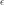:
(it must be normalized
as ).
Let’s calculate 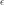:
We calculate the steepest-descent (SD) vector :
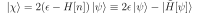
The conjugate-gradient (CG) vector is calculated as:
To satisfy the normalization constraint of , the CG vector is
further orthogonalized to and normalized to (this step is one
particular, but not the only way to impose the normalization constraint):
That is, now and
.
The new CG vector is then updated as usual in CG by
, but then it must be normalized.
As such, equivalently, it is updated by a linear combination
of and :
such that it remains normalized:
So  ,
,  are any real numbers satisfying the equation , whose
parametric solution is ,
are any real numbers satisfying the equation , whose
parametric solution is ,  with 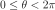:
with 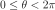:
where  is determined by minimizing the free energy as
a function of .
is determined by minimizing the free energy as
a function of .
8.9.11. References¶
- DFT(1,2,3)
Dreizler, E. K. U. Gross: Density functional theory: an approach to the quantum many-body problem
- pickett(1,2)
Pickett, Pseudopotential methods in condensed matter applications, Computer Physics reports, Volume 9, Issue 3, April 1989, Pages 115-197, ISSN 0167-7977, DOI: 10.1016/0167-7977(89)90002-6. (http://www.sciencedirect.com/science/article/B6X3V-46R02CR-1J/2/804d9ecaa49469aa5e1050dc007f4a61)